Due: Thursday, June 11, 2020, 11.59pm.
Answer the following questions. Upload your solutions as a single pdf file to LMS. Include your
last name and HW1 in the name of the file, eg, mitchellHW1.pdf. No late homework
accepted.
- Section 16.1, pages 902–904:
- Sketch the vector field F = (x + y2
 ): draw the vectors attached to points with
integer coordinates in the rectangle [-2, 2] × [2, 2].
): draw the vectors attached to points with
integer coordinates in the rectangle [-2, 2] × [2, 2].
- Find div(
 ) when 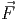 = cos(x - y) - yexz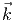.
) when 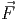 = cos(x - y) - yexz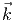.
- Find curl(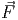) when = cos(x - y) - yexz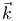.
- Let 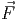 = (2xzex2, 0,ex2). Either find a potential function f(x,y,z) for the vector
field 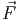 or show one does not exist.
- Section 16.2, pages 915–919:
- Compute the line integral of the scalar function f(x,y,z) = xy + z over the helix
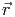(t) = (sin(t), cos(t),t), for 0 ≤ t ≤.
- Compute the line integral of the vector field function 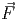(x,y,z) = (xy, 2,z3) over
the helix 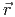(t) = (sin(t), cos(t),t), for 0 ≤ t ≤.
- Parametrize the quarter circle x2 + y2 = 1 with x ≤ 0, y ≥ 0.
- Let 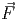 = 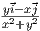. Show that the line integral of is equal to 2π for any clockwise
circle of radius R > 0 centered at the origin.
- Section 16.3:
- Find a potential function for the vector field 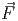 = ((z + 1)ex, cos(y),ex).
- Use the potential function you found in question (3a) to find the line integral of
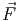 = ((z + 1)ex, cos(y),ex) over the curve 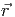 = (t - t2,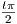,t) for 0 ≤ t ≤ 1.
Homework submission guidelines
Submissions: you can make multiple submissions of a homework, but only the final
submission will be graded. The single pdf file submitted will be a multipage document, and the
pages must be in the correct order.
Producing a pdf file: the homework assignments will involve extensive mathematical
formulas and expressions, and will often require sketches (of curves, domains, etc).
- Suggestion 1 (free):
a) write out the solutions neatly, and clearly, on regular paper
b) use a pdf scanner on your phone, and produce one multipage pdf file. Recommended
scanning apps include Adobe Scan (highly recommended), ABBYY FineScanner,
CamScanner
- Suggestion 2 (not free):
use an iPad, or something similar, along with a pdf producing note taking app (like
Notability)
- Suggestion 3 (free):
use LaTeX. This produces easy to read text but doing sketches is more complicated.
The reason is that you will need to make pdf images of your sketches, and then include
them in the LaTeX output. This is not difficult to do, and if you want to try this just
ask and we will provide more information on what to do.